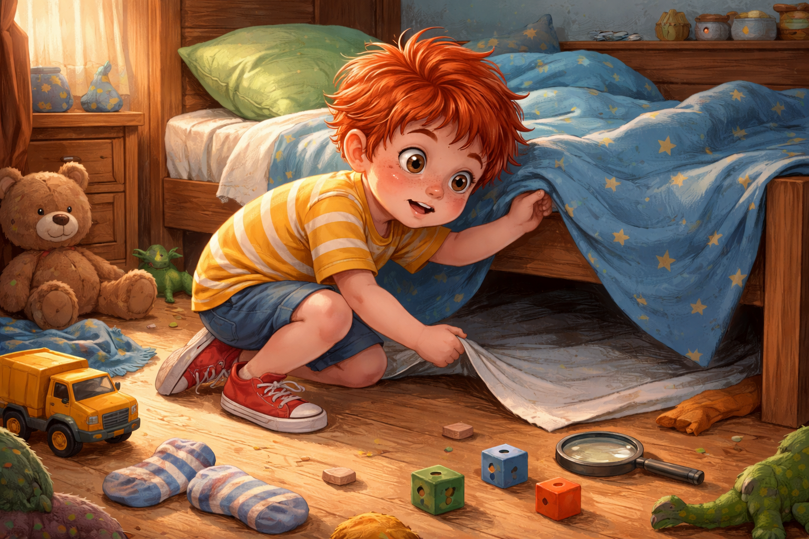
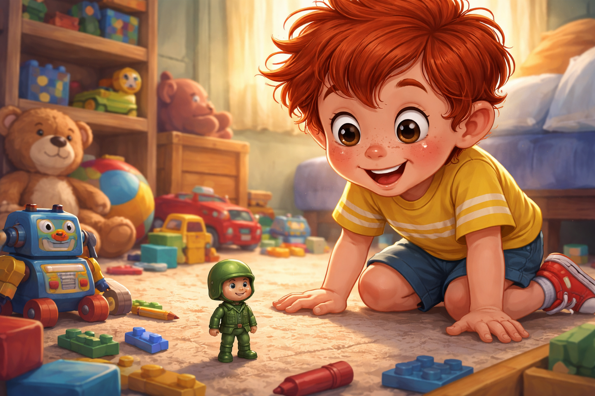
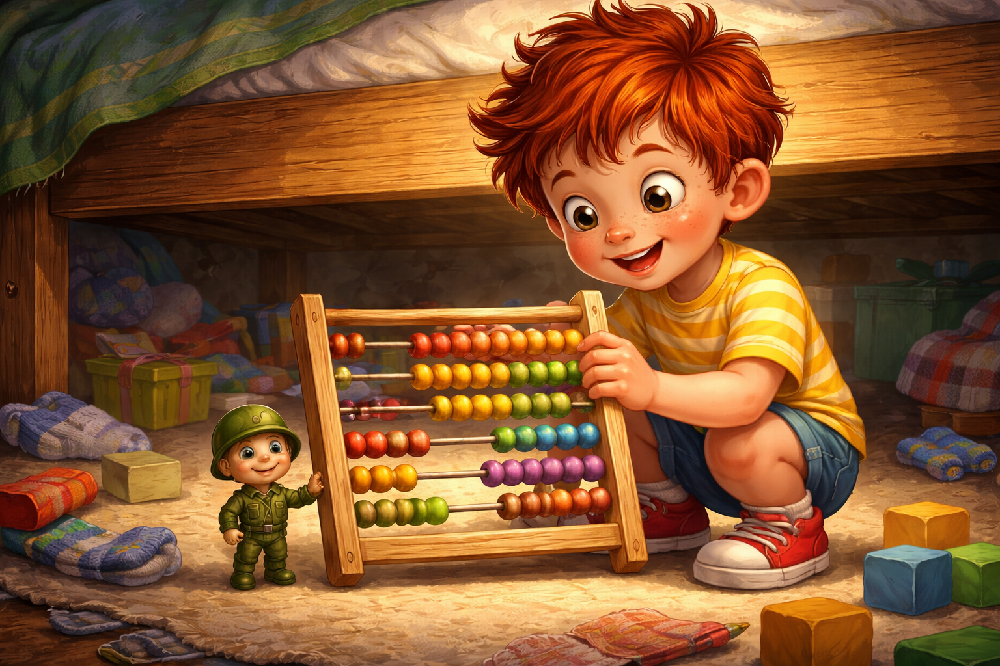
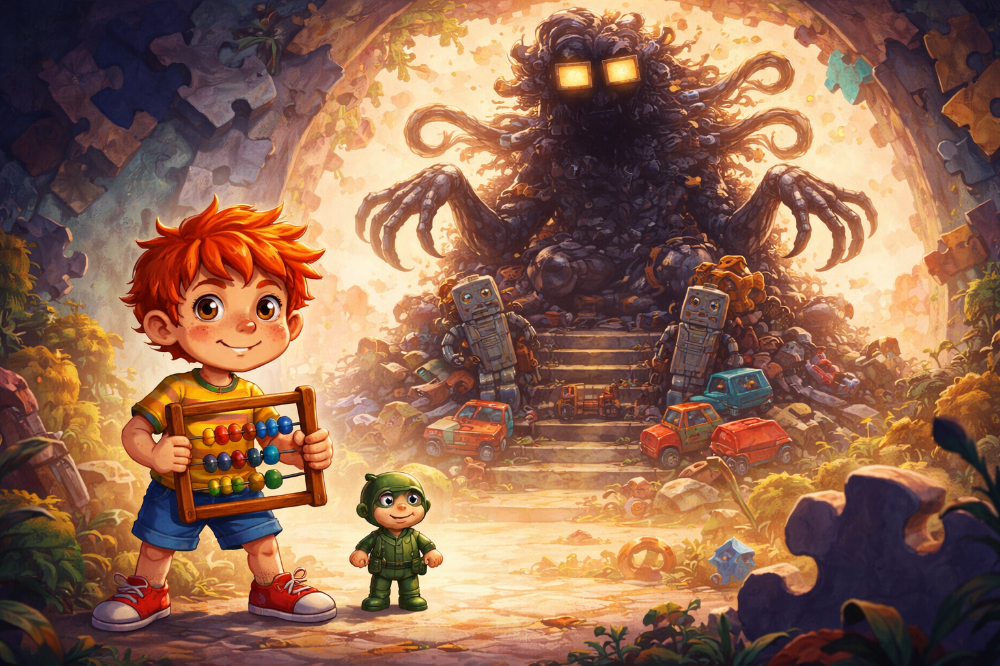
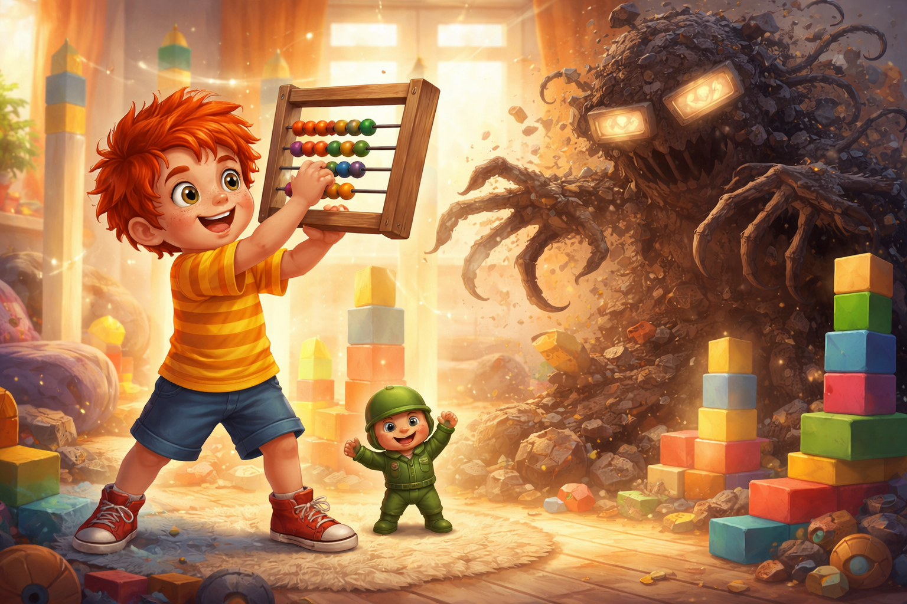
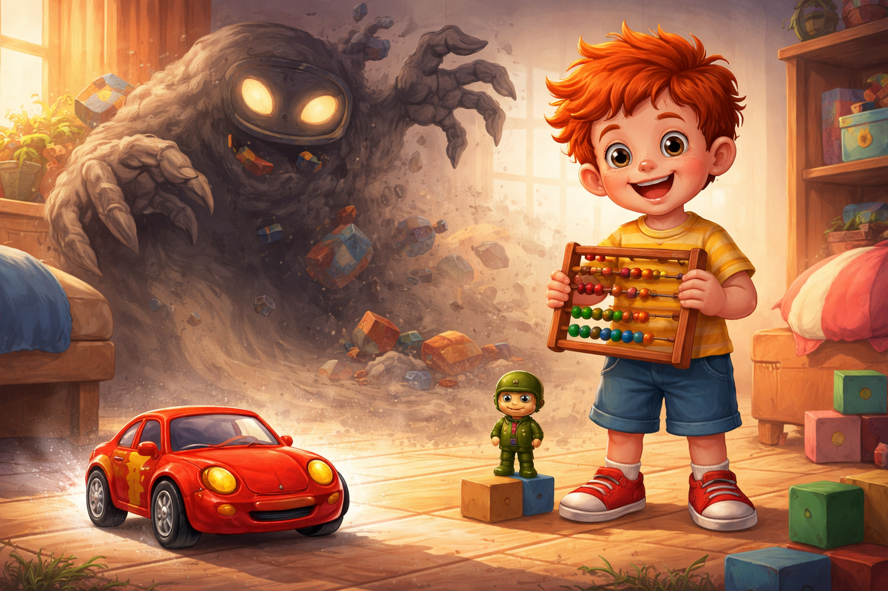
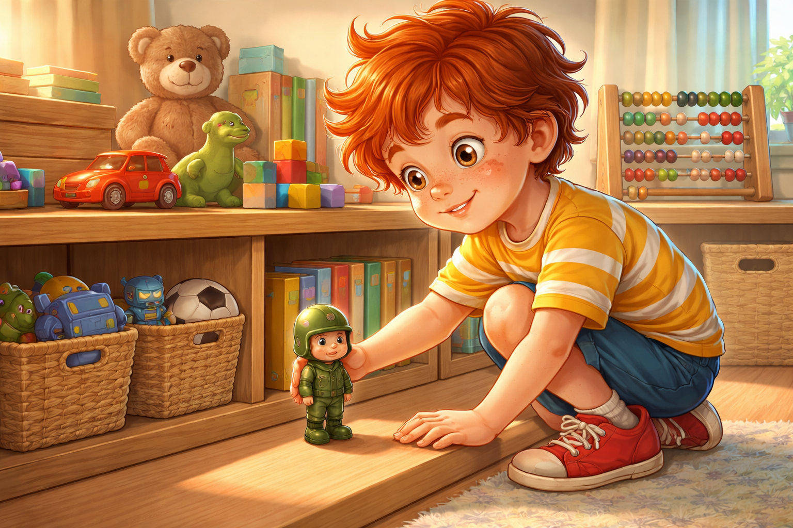

Палавко и безпорядъкът
Здравей, аз съм Палавко - и пакостта ми е суперсила!
Днес ще ти разкажа как играчките ми се разбунтуваха, една от любимите ми изчезна и аз се озовах лице в лице с Хаос - повелителя на безпорядъка.
Но с помощта на един малък герой всичко си дойде на мястото.
Готов ли си? Хайде, скачай в приказката с мен.
Палавко и Хаосът в стаята

В стаята на Палавко цареше пълен, ама съвсем пълен хаос.
Кубчета се криеха под леглото. Част от пъзел беше попаднала в обувката. Лего се беше озовало във вазата, а един динозавър надничаше от чекмеджето с чистите гащи.
Насред всичко това стоеше самият Палавко. Беше си направил сако от одеяло, сложил беше пластмасов тиган на главата си като шлем и държеше ролка от кухненска хартия като най-мощната тръба във вселената.
- Пиу-пиу! Ръцете горе, плюшковци! Планетата Легония вече е под мой контрол! - извика той. - Всички играчки, разпилявайте се!
И играчките сякаш наистина го послушаха.
Но в този момент нещо изщрака.
Любимата количка - онази със стикерите, драскотините и липсващото колело - изчезна.
- Ъ? Количкеее? Къде си? Не може просто така да се изпариш!

Палавко се разрови в чаршафите. Погледна под леглото. Извади чорапи, камиончета и едно мече със зейнала уста.
Количката я нямаше.
Завръщането на Рико

Изведнъж сред купчината играчки се появи малък, изтъркан, но гордо изправен пластмасов войник.
Беше зелен, с леко избледняла боя, кръгло приятелско лице и каска, която беше преживяла много битки под леглото.
- Палавко - каза той сериозно, - време е да научиш истината.
- Ти пък кой си? Чакай... май те знам?
- Помниш ли зимата с кашата и снежния замък? И как ме носеше в джоба си, докато ме спасяваше от Снежния октопод?
Очите на Палавко светнаха.
- Рико! Войникът Рико! Ти беше най-верният ми... ама къде изчезна?
- Забрави ме - каза Рико тихо. - Разхвърли ме. И така попаднах в Сенките на Хаоса. Но успях да избягам, защото разбрах, че имаш нужда от помощ.
- А количката?
- Вече е в затвора на Хаос, повелителя на безпорядъка. Той живее там, където играчките са изоставени, счупени или забравени. Стаята ти се е превърнала в портал и количката е попаднала в неговия капан.
Палавко преглътна.
- Ама аз не исках. Само играех.
- Без ред няма игра, Палавко - каза Рико. - Хаос не прощава.
- Трябва да я върнем! - извика Палавко. - Ще я спася! Обещавам! Ще подреждам! Ще броя до десет! Ще... ще си намеря кош за всичко!
Оръжието на реда

- Добре - каза Рико. - Имаш ли подходящо средство срещу Хаос?
Палавко вдигна счупен пластмасов пистолет.
- Ами този?
Рико поклати глава.
- Счупените неща са любимото оръжие на Хаос. Това ще се обърне срещу нас. Трябва ни нещо обратно на него. Нещо, което носи ред.
Палавко се замисли.
Рови под леглото, измъкна чорап, капачка от флумастер, две кубчета и накрая нещо старо, дървено и леко прашно.
- Това! - извика той. - Сметалото! Мама го използваше, когато брояхме играчките... преди.
- Чудесно - каза Рико. - Хвани го здраво. И мен също.
Палавко хвана сметалото с едната ръка, а Рико - с другата.
И тогава стаята се завъртя.
Фююю!
Царството на Хаос

Всичко познато изчезна.
Появиха се сенки от пъзели, лего-бурени и огромен трон, направен от разбити роботи, счупени камиончета и забравени части.
На върха на трона седеше самият Хаос.
Той беше голяма тъмна сянка с очи като зейнали чекмеджета, пръсти като лепкави ленти и глас като развален радиоапарат.
- Кой смее да влиза в моя дом? - прогърмя Хаос. - Всяка счупена играчка е моя! Тук няма ред. Тук има само забравени неща, трохи и парчета!
Палавко стисна сметалото.
- Не и днес! Дошъл съм да си върна количката!
Хаос се изсмя.
- Късно е. Тя вече се разпада. Никой не я иска. Ще я превърна в куп части!
- Не! - извика Рико. - В Палавко има промяна. Той носи реда.
Битката с безпорядъка

Палавко вдигна сметалото.
Дървените топчета зазвъняха тихо и подредено.
Тик-так. Тик-так.
- Хаос, може и да си силен - каза Палавко, - но редът има ритъм. И брои до три.
Той премести първото топче.
- Едно.
После второто.
- Две.
После третото.
- Три!
Изведнъж всичко затрепери.
Кубчетата застанаха в колони. Книгите се подредиха по цветове. Мечето седна мирно в коша. Частите на количката се събраха една по една.

А самата количка - цяла, здрава и блестяща - се изтърколи от сянката.
- Не! - изпищя Хаос. - Редът ме стопява!
И той се стопи като разлято лепило, което някой най-после беше избърсал.
Стаята след бурята

Секунда по-късно Палавко отвори очи.
Стаята беше тиха.
И подредена.
Количката си беше в коша. До динозавъра. До кубчетата. До Рико. До сметалото.
Палавко взе малкия войник и го постави най-отпред, където можеше да го вижда.
- Благодаря ти - прошепна той. - Вече няма да те забравя.
После погледна стаята си и се усмихна.
Подредените играчки сякаш чакаха следващото приключение. И за първи път Палавко разбра, че редът не спира играта.
Редът я пази.
Поуката
Понякога, когато разхвърляш, можеш да изгубиш повече от играчки.
Но когато имаш смелост да подредиш, можеш да спасиш цял един свят.
Порядъкът не е наказание - той е магията, която пази всичко любимо.